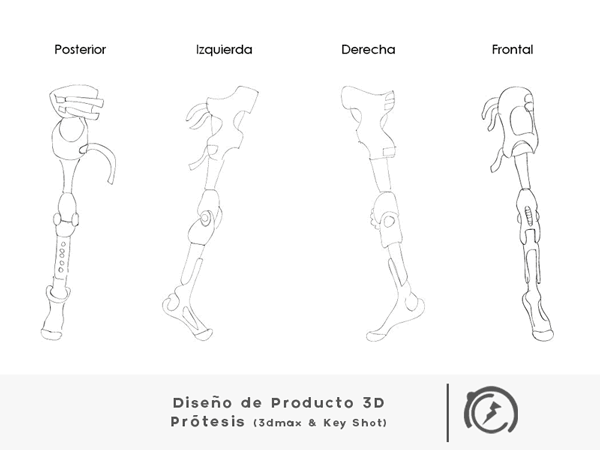
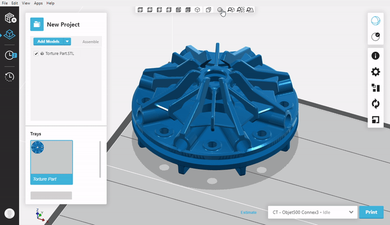
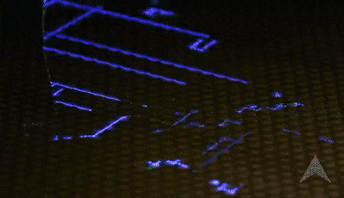

¿QUE ELEMENTOS PERMITEN QUE LA COMPUTACION GRAFICA SE HAYA DESARROLLADO AMPLIAMENTE?
AutoCad y Blender
Son utilizados como base en el diseño de diversos objetos compatibles con la impresión en tercera dimensión.Por ejemplo son usados en la impresión de modelos 3D que están siendo aplicados en la generación de implantes personalizados como prótesis de rodilla y cadera “hechos a la medida”.
Impresora 3D cartesiana
Reciben este nombre debido al sistema que utilizan de coordenadas dimensionales, el cartesiano. Consiste en tres ejes ortogonales -el eje X, Y y Z- que se utilizan para determinar dónde y cómo se debe mover el cabezal de impresión en las tres dimensiones de forma correcta, y corregir así la dirección del movimiento.

PolyJet
La impresión 3D PolyJet es similar a la impresión por inyección de tinta de documentos solo que, en lugar de pulverizar tinta encima de un papel, genera una serie de capas de un fotopolímero líquido (que al instante cura con luz UV,para pasar a un estado sólido), y esas capas terminan por conformar el objeto.
Estereolitografía
La estereolitografía o SLA, también conocida como fabricación óptica, basa su funcionamiento en fotopolímeros en un estado líquido viscoso que son capaces de cambiar a un estado sólido mediante la exposición a la luz. Sobre un recipiente lleno de este fotopolímero, situado encima de una plataforma, se ubica un láser que se va desplazando sobre el líquido siguiendo la forma del objeto a reproducir y consiguiendo que la resina pase de estado líquido a sólido.
Algoritmos Raster
Es el proceso por el cual una imagen descrita en un formato gráfico vectorial se convierte en un conjunto de píxeles o puntos para ser desplegados en un medio de salida digital, como una pantalla de computadora, una impresora electrónica o una Imagen de mapa de bits.
 Siguiente
Atras
Siguiente
Atras